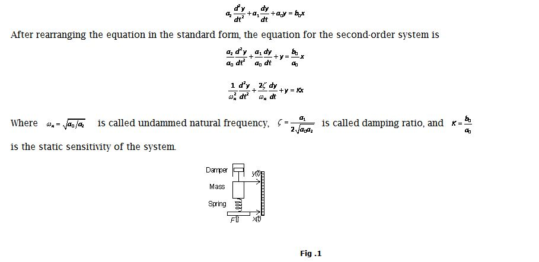
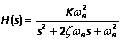
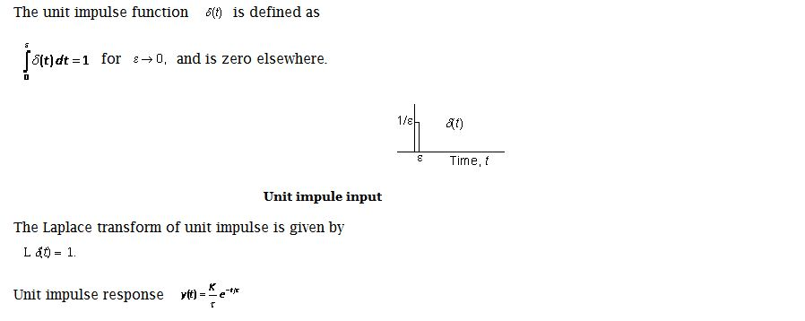
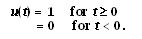
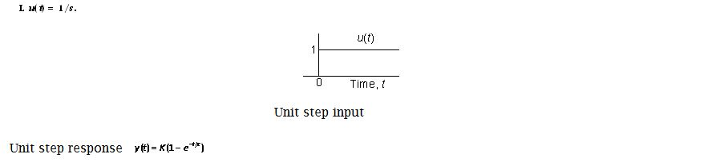
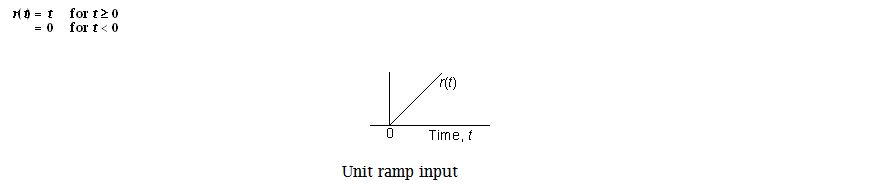
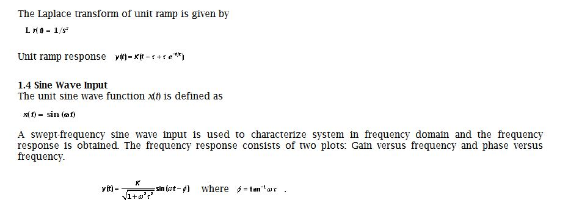

Shakshat Virtual Lab
INDIAN INSTITUTE OF TECHNOLOGY GUWAHATI
Theory
Systems Systems are specified as zero-order, first-order, and second-order depending on the order (highest derivative term) of the differential equation. The following sections describe the system models, real life examples and equations of responses for the test inputs.
Second-Order System The highest order term in the differential equation of the second-order systems is second derivative. The second-order systems follow the equation. 
The transfer function of the second-order system is
An example of a second-order measurement system is a mass-spring-damper assembly shown in above Fig. 1
1. Test Inputs
The following test inputs are normally used for testing the dynamics of a system. For characterizing system in time domain, the test inputs used are impulse, step, and ramp. A swept frequency sine wave is used to characterize system in frequency domain.
1.1 Impulse Input
1.2 Step Input
The unit step function u(t) is defined as

The Laplace transform of unit impulse is given by

1.3 Ramp Input
The unit ramp function r(t) is defined as

